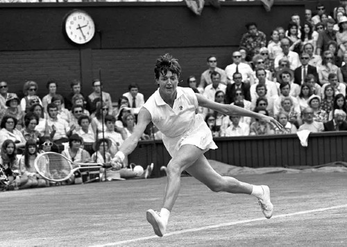

Tournaments are often organized by gender and number of players. Common tournament configurations include men's singles, women's singles, and doubles, where two players play on each side of the net. Tournaments may be organized for specific age groups, with upper age limits for youth and lower age limits for senior players. Examples of this include the Orange Bowl and Les Petits As junior tournaments. There are also tournaments for players with disabilities, such as wheelchair tennis and deaf tennis.
The Grand Slam tournaments, also referred to as majors, are the world's four most important annual professional tennis tournaments. They offer the most ranking points, prize money, public and media attention, the greatest strength and size of field, and the longest matches.
| Tournament | Month | City | Country | Continent | Established |
|---|---|---|---|---|---|
| Australian Open | January | Melbourne | Australia | Oceania | 1905 |
| French Open | May to June | Paris | France | Europe | 1891 |
| Wimbledon | June to July | London | United Kingdom | Europe | 1877 |
| US Open | August to September | New York | United State | North America | 1881 |
The Association of Tennis Professionals (ATP) Tour comprises ATP Masters 1000, ATP 500, and ATP 250 and the ATP Cup. The ATP also oversees the ATP Challenger Tour, a level below the ATP Tour, and the ATP Champions Tour for seniors.
The ATP use the Pepper stone ATP rankings to determine the qualification for entry as well as the seeding of players in all singles and doubles tournaments, the dates are published weekly.
Equivalent to men's ATP tour, the Women's Tennis Association (WTA) Tour is the main women's professional tennis tour and consists of more than 50 tournaments held worldwide, including the four Grand Slam tournaments and several Premier events.
- Davis Cup (men)
- Billie Jean King Cup (women)
- Hopman Cup (men/women)
- Laver Cup (men)
- United Cup (men/women)
Professional tennis players enjoy the same relative perks as most top sports personalities: clothing, equipment, and endorsements. Like players of other individual sports such as golf, they are not salaried, but must play and finish highly in tournaments to obtain prize money.
Ken Rosewall
Australian, 23 Grand Slam titles, known for his consistency and precision, excellent footwork, and ability to control the pace of a match
Rod Laver
Australian, the world number 1 ranked professional in some sources in 1964, in all sources from 1965 to 1969 and in some sources in 1970
Roger Federer
Swiss, 20 Grand Slam titles and a record-breaking stint as the world No. 1
Rafael Nadal
Spanish, 20 Grand Slam titles and numerous other titles to his name, known for his tenacity, athleticism, and competitiveness
Novak Djokovic
Serbian, 20 Grand Slam titles, known for his versatility and consistent performance
Helen Wills Moody
American, 19 Grand Slam singles titles dominant in the 1920s and 1930s

Margaret Court
Australian, 24 Grand Slam singles titles, dominant in the 1960s and 1970s
Martina Navratilova
American, 18 Grand Slam singles titles, dominant in the 1970s and 1980s
Steffi Graf
German, 22 Grand Slam singles titles, dominant in the late 1980s and early 1990s
Serena Williams
American, 23 Grand Slam singles titles, dominant for over two decades